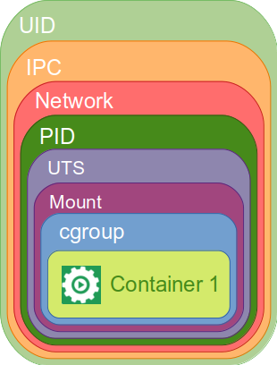
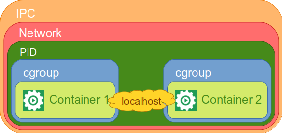

Container & Security
By Sébastien Baillet From
Hi and welcome to this presentation about container & security,
First, let me introduce myself:
I'm Sébastien Baillet,
I'm a cybersecurity expert from Thales,
At the moment, I'm technical security referent at ADEO Inhabitant Social Platform
Old School Survey
Before we begin:
Who is developer?
Who makes DevOps? (or believes he makes DevOps)
Who makes or uses containers?
Who think he has the skills to be responsible of his project security?
Who has a security referent in his team?
Who know that DevOps teams are responsible of their project security?
As of all of you should know, Manawa is a mutualized cloud,where we can deploy publicly exposed applications,
What happen if an attacker takes control of a container deployed on Manawa,
He may be able to attack other applications deployed on Manawa, database or even infrastructure...
That's why we have to build hardened images and use container safely,
One project must not impose risks to others.
Summary
So, in this presentation:
We will talk about good practices regarding image creation and container use,
Next, I'll answer the question you'll ask yourself at the end of the first part: how to be able to work if I follow what this guys told us.
Container use and images creation good practices
So, Good practices regarding container use and images creation.
Containers must not run as root
To prevent the possibility to escape as root, containers must not be executed as root.
Let's start by what is, I hope, the most obvious one:
Containers must not be executed as root,
The main purpose is to prevent the following case : if a vulnerability allows an attacker to escape from a compromised container, he will escape as root, compromising the host.
Containers should only have the strictly minimum capabilities
A container should be started only with strictly minimum capabilities for it to run.
A container should be started only with strictly minimum capabilities for it to run.
It's called the least privilege principle
Capabilities...?
Each privileged operation is associated with a capability
In Linux, each privileged operation is associated with a capability
Usually, processes running as root inherit of all capabilities, while processes running as unprivileged user have none.
By restricting capabilities we're giving as few opportunities as possible to an attacker that has taken control of the container to extend further the attack.
For example, if a process has SYS_BOOT capability it can reboot the system, it can't if it hasn't this capability.
Container engine & capabilities
Docker engine starts container with default capabilities described in Docker documentation .
This default list may be overloaded in Docker daemon configuration or at container start. In Manawa, you can drop capabilities, but not add them.
By default, Docker engine starts container with a default list of capabilities.
The default list can be overloaded in Docker engine or in orchestrator configuration
It's possible to add or drop capabilities at container start with docker-cli options '--cap-add' and '--cap-drop' or by modifying the security context.
Depending of the configuration, orchestrator allowed you to add or drop capabilities at containers/pods start.
Usually, the configuration allowed you to drop capabilities, but not to add them.
Capabilities Demos
With NET_BIND_SERVICE capability
An illustration with the NET_BIND_SERVICE capability
We start a container as root
And we bind a socket to the SSH port with netcat
No error, it works
Now we start another container expect that we drop the NET_BIND_SERVICE capability
Let's try to bind a socket to the SSH port
It fails
Capabilities Demos
With SETUID capability
Another illustration with, this time, the SETUID capability
We start a container
The default user is a sudoer
He can do any command, without password: Security First!
the command "sudo id" works
Now we start another container expect that we drop the SETUID capability
Let's try the command "sudo id":
It fails
Images should contain only the strict minimum
Images should contain only the strict minimum to allow the application to run.
Ideally, final image should contain only the strict minimum to allow the containerized application to run.
For example, an image should not contain shell/bash, package manager, compiler or any other tool not required by the application
Again, the purpose is to give less possibility for an attacker that has taken control of the container.
To achieve this goal, you usually have to use multi-stage builds and distroless or equivalent base image, or even better scratch base image.
Multi-Stage builds and Distroless example
FROM maven:3.6.1-jdk-11-slim as BUILDER
WORKDIR /app
COPY . /app/
RUN mvn -T4 package -DskipTests
FROM gcr.io/distroless/java:11
COPY --from=BUILDER /app/target/app.jar /app.jar
USER 1000
ENTRYPOINT ["java", "-server", "-jar", "/app.jar"]
Container should be read-only
Containers should be run read-only.
Only necessary read-write mounted volume will be writable: ideally none!
Most containers may and should be run read-only.
A read-only container can't write file.
Only necessary read-write mounted volume will be writable.
A container without filesystem write capacity won't allow an attacker to upload tools on the filesystem to use the container as a pivot to extend the attack.
Container should be read-only
The Kubernetes equivalent option is readOnlyRootFilesystem, for example:
apiVersion: v1
kind: Pod
metadata:
name: volume-test
spec:
containers:
- name: container-test
image: busybox
readOnlyRootFilesystem: true
volumeMounts:
- name: all-in-one
mountPath: "/projected-volume"
readOnly: true
Secret must not be embedded in image
No secret in image
Please follow the guideline: https://github.com/adeo/github-security-guidelines
I won't spend too much time on this but:
No secret in image, ever
check the github-security-guidelines here, and use Vault.
How the hell can I work with such hardened images?
Ok, we have hardened our images
But, how can I troubleshoot problems now if I can't look inside my container!
What are containers?
Containers are process "executed" by the host kernel, using chroot, namespace, and cgroups to provide isolation and resource limits.
What are containers?
Containers are process executed by the host kernel. Some kernel features are used to provide isolation and resource limits like chroot, namespaces and cgroups.
chroot provide filesystem isolation
namespaces provide resources isolation
cgroups are used for resources limitation
Image file system
Images and containers filesystem are constituted from layers,
Each layer is the result of a Dockerfile instruction,
If you really need it you can check the instruction with docker history command
Or even better, you can use dive tool.
Namespaces
Namespaces are a feature of the Linux kernel that partitions kernel resources. Processes that share the same namespace can see each other resources given the kind of the namespace.
Namespaces
Namespace kind list:
Process ID (PID)
Network
Mount
Interprocess Communication (IPC)
Unix Time Sharing (UTS)
User ID (UID)
Control Group (cgroup)
Process ID (PID): each process in the same PID namespace can see each others and won't see processes in another PID namespace,
Network: every processes in the same network namespace share the same network interface(s), by default only loopback interface. An interface can be in only one network namespace,
Mount: every processes in the same mount namespace have access to the same mount points, and won't have access to mount points of another mount namespace,
Interprocess Communication (IPC): each process in the same IPC namespace can use interprocess communication with each other, allowing shared-memory between processes and signal usage (SIGKILL, SIGINT...),
Unix Time Sharing (UTS): every processes in the same UTS namespace share the same host/domain name,
User ID (UID): every processes in the same UID namespace share the same user table. Each UID namespace has a mapping table converting user IDs from the container's point of view to the system's point of view,
Control Group (cgroup): every processes in the same cgroup namespace share the same cgroup resource limitation.
Containers Isolation

By default, when a Docker container starts, it starts with his own namespaces, assuring isolation from host
Containers Isolation
Docker offers the possibility to join other container or host namespaces.
Docker offers the possibility to join other container or host namespaces,
Here is two illustrations of this feature,
First we will join another container network namespace
Then we will join another container PID namespace
Demo
Let's join a container network namespace
First we will join another container network namespace
Demo
Let's join a container PID namespace
Now we will join another container PID namespace
Pods Isolation
Pods (atomic unit of Kubernetes deployment) can contain one or more containers. This containers share IPC, Network and PID namespaces, but have specific cgroup:

Pods Isolation
Demo: debugging network problems
Takeaway
Container must not run as root,
Container should have the strictly minimum capabilities,
Build minimalist images,
Run container read-only,
No secret in images.
Container must not run as root,
Container should have the strictly minimum capabilities,
Build minimalist images,
Run container read-only,
No secret in images.
with the tips I gave you, you can make smaller images, that are more secure while you can continue working with.
More information...
... can be found in ADEO GitHub at:
https://github.com/adeo/container-security
All information presented here and much more can be found in this Innersource ADEO Github repository
Please feel free to contribute, by making pull request, issues or by enhancement proposition.
Thank you for your attention